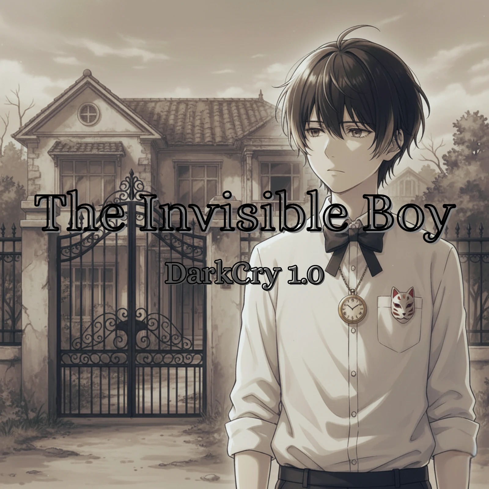
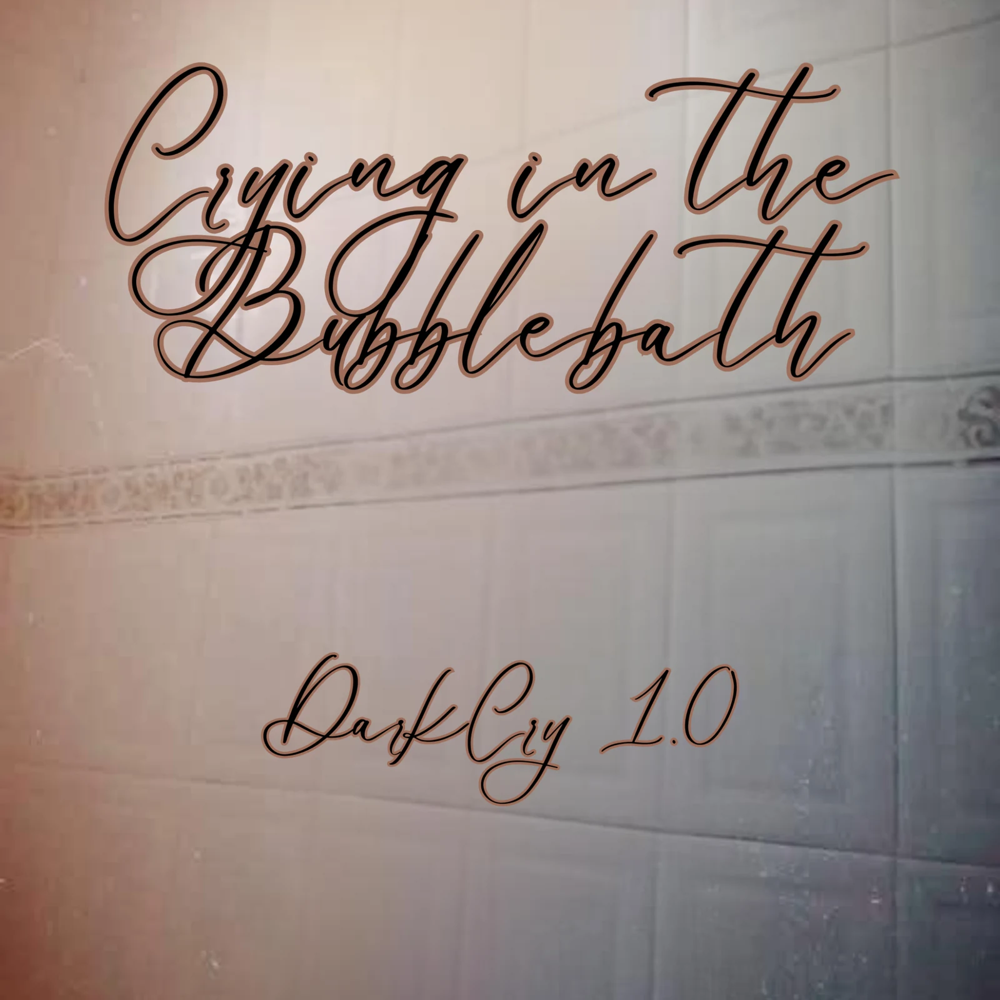
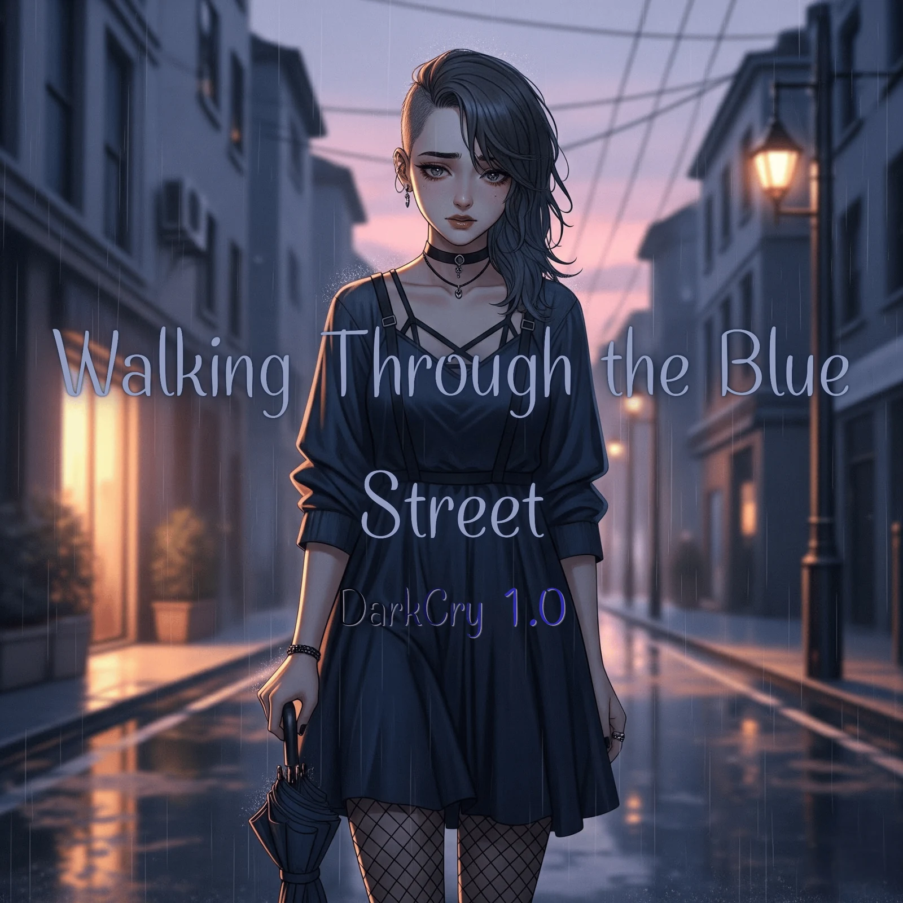
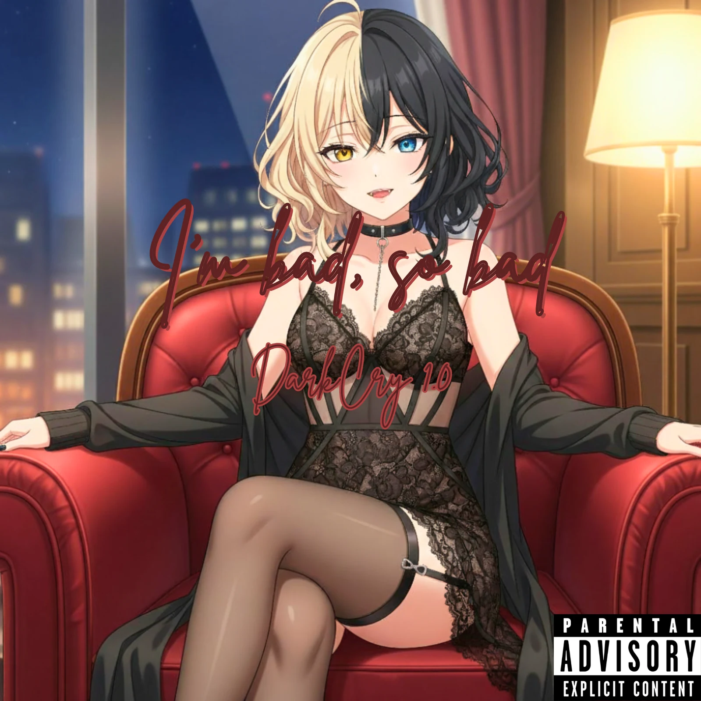

El Álbum Pilar
Inaugura formalmente una de las cuatro Eras troncales y fija una fase cardinal de la historia de I.B. Su posición en el canon no es intercambiable.
ARCHIVO FUNDACIONAL · CUATRO OBRAS MATRICES
Cuatro álbumes. Cuatro estados irreversibles. Una misma fractura que cambia de voz, de cuerpo y de lenguaje sonoro.
Este archivo reúne la definición, la estética, los tracklists y la función narrativa de las cuatro obras discográficas matrices que sostienen el eje troncal de Invisible Boy.
DarkCry 1.0 distingue tres funciones dentro de su arquitectura discográfica: Álbum Pilar, sub-era y álbum convencional. La categoría no depende de la duración, del número de canciones ni de la fecha de publicación, sino del lugar que la obra ocupa en el canon y del trabajo narrativo que realiza.
Los cuatro Pilares inauguran las Eras troncales; las sub-eras .5 y .9 registran las fracturas y los umbrales que enlazan esas fases; los álbumes convencionales amplían el universo mediante conceptos cerrados, estudios sonoros, precuelas, rutas o relatos paralelos, sin convertirse por ello en un nuevo Pilar o en una bisagra decimal.
Inaugura formalmente una de las cuatro Eras troncales y fija una fase cardinal de la historia de I.B. Su posición en el canon no es intercambiable.
Ocupa una transición .5 o .9: registra una fractura externa o el agotamiento de un refugio antes del siguiente Pilar. No es una quinta columna matriz.
Desarrolla un concepto, estudio, precuela, recorrido paralelo o desenlace alternativo. Puede ser una obra completa y autónoma sin inaugurar una Era troncal.
La herida primaria · infancia doméstica · génesis de la identidad

Invisible Boy está de pie frente a los portones de hierro forjado negro de una casa señorial deteriorada y grisácea. La estética anime melancólica acentúa su cabello castaño oscuro alborotado y una mirada cabizbaja, vacía y distante.
Viste camisa blanca formal con las mangas recogidas hasta los antebrazos, corbata de moño negra y un reloj de bolsillo vintage dorado colgado al cuello sobre el pecho. En el bolsillo superior izquierdo lleva un pin con una máscara kitsune blanca de vivos rojos. El título aparece en tipografía clásica contorneada en negro, acompañado abajo por el sello DarkCry 1.0.
El álbum expone el terror doméstico infantil, el encierro doméstico y la hambruna de afecto impuesta por la figura materna («Ella») bajo las directrices de la inflexible «Cold Law». La infancia se convierte en un campo de supervivencia.
El paisaje sonoro se construye con bedroom pop, guitarras acústicas íntimas, cajas de música desafinadas y ruidos diegéticos de juguetes viejos y estática de radio. Children's Game y Hide & Seek pervierten los juegos infantiles para convertir el escondite en una necesidad de supervivencia. Paper Heart, Unseen Brilliance y Disappear revelan la inutilidad de buscar aprobación académica o afectiva frente a la violencia.
El cierre, The Worst Son, culmina con la capitulación del protagonista: I.B. internaliza la culpa del maltrato y acepta ser el monstruo del hogar.
Es la herida primaria y la génesis de la discografía. Las «semillas del sufrimiento» nacen de las libretas físicas y los poemas manuscritos en español por I.B. durante su niñez.
En el relato, Violet toma forma como una voz que expresa los recuerdos de I.B. Las letras y poemas de las libretas son escritos por el autor; SadMuse 1.0 únicamente adapta esos poemas ya existentes y les da forma musical, mientras Suno aporta sonido y voz. La herramienta no redacta ni sustituye el texto original.
The Worst Son es la única pista en la que I.B. rompe el filtro digital y canta con su voz directa. Ese instante marca la aceptación de que jamás será amado en su propio hogar y lo condena al desarraigo.
La transacción fallida · el cuerpo · la purificación imposible

La portada oficial presenta una estética minimalista, desoladora y fría: un encuadre cerrado de azulejos blancos y brillantes de un baño o ducha de hotel. Una cenefa decorativa opaca atraviesa la pared y queda velada por una ligera condensación de vapor. El título se sitúa en el tercio superior con caligrafía cursiva manual y elegante en tonos marrones oscuros; abajo figura la firma sobria de DarkCry 1.0.
Este Pilar retrata la «transacción fallida». Tras el trauma de la infancia y las secuelas del grooming, I.B. intenta mitigar el frío interior buscando refugio somático en camas de hotel y en compañía de personas desconocidas. Fleeting Warmth y Drenched documentan el intercambio de intimidad física a cambio de compañía temporal, seguido inevitablemente por el desamparo.
El agua de The water won't cleanse y The water simboliza una purificación frustrada: puede retirar fluidos y sudor de la piel, pero no borrar la recuerdo del abuso y la humillación. El bloque final describe despertares cíclicos entre las 3:00 y las 4:00 AM, en habitaciones extrañas, bajo el remordimiento y el sonido metálico del tiempo.
Es el colapso del filtro emocional inicial. Durante la creación de este Pilar —dentro de la etapa temprana del proyecto— se utilizó Donna AI para dar forma a un tratamiento sonoro más árido, con arpegios menores, gotas de agua, ecos invertidos y pulsos de reloj. Donna AI no escribió las letras: la escritura poética y lírica siguió siendo íntegramente del autor; Suno aportó la realización musical y vocal.
El impacto narrativo es la consagración de la prostitución emocional de I.B. Al comprobar que el afecto no se obtiene mediante la entrega del cuerpo y que el agua no borra el recuerdo, abandona la esperanza de sanación doméstica y se predispone a huir definitivamente hacia la metrópolis.
La ciudad nocturna · el entumecimiento · la alienación

La imagen está dominada por tonos azul cobalto, lluvia y neblina de asfalto. En el centro, Violet camina sola por una avenida metropolitana flanqueada por farolas húmedas y reflejos titilantes. Lleva audífonos de diadema, la postura cabizbaja y las manos dentro de los bolsillos. El título y la rúbrica DarkCry 1.0 aparecen en blanco con resplandores azulados, integrados al frío y a la desconexión urbana.
El tercer Pilar describe la fase del entumecimiento, la alienación geográfica y la apatía absoluta. Después de escapar de su casa y del círculo de abuso —Run from home y Erase You—, I.B. deambula sin rumbo por la ciudad nocturna.
La música adopta un pulso de electro pop minimalista, bajos continuos, sintetizadores fríos y texturas cinematográficas urbanas cargadas de tráfico, sirenas distantes y percusiones de reloj (*tic-tok samples*) heredadas del molde compositivo de Sunday in the city. Bitter Fumes, Lost y Broken registran la dependencia de sustancias, cigarrillos y alcohol como anestesia. I'm down retrata la disolución de la identidad ante los reflejos de las vitrinas.
Walking through the Blue street encarna la muerte de la sensibilidad orgánica. El asfalto no cura las heridas de la infancia ni las traiciones románticas previas: amplifica la soledad.
La música abandona los instrumentos de madera y los lamentos acústicos para tecnificarse en sintetizadores repetitivos y precisos, remasterizados a Suno V5.0. El entumecimiento agota la resistencia pasiva de Violet y abre la brecha que exige el nacimiento de una identidad agresiva e insensible.
La mutación psíquica · Dolly · la armadura de neón

Dolly aparece sentada desafiantemente en un sillón orejero capitoné de terciopelo carmesí, dentro de un departamento o suite de lujo con un amplio ventanal nocturno sobre los rascacielos. Su cabello está dividido exactamente por la mitad: lado derecho rubio platinado y lado izquierdo negro azabache. Presenta heterocromía completa: ojo derecho amarillo dorado y ojo izquierdo azul eléctrico.
Viste lencería negra de encaje con transparencias, corsé ajustado, portaligas, medias de malla oscura y choker gótico con una pequeña cruz. Sostiene una copa de vino tinto y sonríe con malicia, dejando ver un colmillo. El título aparece en cursiva carmesí sangrienta, con el sello Parental Advisory en la esquina inferior derecha.
More / Dame más — sencillo debut y tema inaugural de la era.
El álbum consuma el punto de no retorno en la transformación de I.B.: su mundo interior entierra el rol de víctima y se enfunda en una «armadura de neón» hedonista, agresiva y aparentemente desprovista de escrúpulos. Desaparecen la melancolía poética, el arrepentimiento y los pianos fúnebres.
La matriz sonora se construye sobre hyperpop acelerado a 155 BPM, bombos secos e incesantes, percusiones saturadas, cajas sincopadas en los tiempos 2 y 4 y bajos sintetizados al borde de la distorsión. Dolly se apropia del micrófono en un Spanglish crudo y directo, centrado en el placer somático inmediato, la dominación carnal, la vanidad superficial y el intercambio de roles. Tras haber sido maltratado e ignorado, el avatar toma el control y convierte a los demás en juguetes descartables.
Es la mutación psíquica definitiva. Dolly prescinde de SadMuse y Donna AI en la adaptación textual: sus letras continúan siendo escritas íntegramente por el autor, sin que esas herramientas redacten o compongan el contenido. Suno aporta la realización sonora y vocal. A diferencia del tratamiento utilizado en las primeras Eras, la escritura de Dolly se presenta sin esa mediación de adaptación.
La permanencia de estas canciones en la versión primitiva y ruidosa de Suno V3.5 simboliza un muro de sonido ensordecedor que acalla los ecos de la infancia bajo la Cold Law y el abuso previo. Dolly reina como una fachada invulnerable que transforma la necesidad patológica de amor en un fetiche de poder: del niño escondido en el armario a la armadura carnal que baila indiferente en la cima de la noche.
La arquitectura de DarkCry 1.0 no clasifica los discos únicamente por su formato discográfico. Distingue su función dentro del canon, su direccionalidad temporal y la manera en que modifican —o amplían— la perspectiva sobre Invisible Boy (I.B.).
| Criterio | Álbum Pilar | Sub-era (.5 / .9) | Álbum convencional |
|---|---|---|---|
| Jerarquía en el canon | Obra matriz y fundacional. Inaugura formalmente una Era troncal: 1.0, 2.0, 3.0 o 4.0. | Fase intermedia de transición. No sustituye al Pilar anterior ni inaugura una nueva columna matriz. | Obra complementaria, autónoma, transversal o paralela. No inaugura una Era troncal ni ocupa por sí misma una bisagra .5/.9. |
| Función narrativa | Consolida uno de los estados cardinales de la historia y la respuesta dominante de I.B. ante esa etapa. | El .5 registra una fractura externa; el .9, el agotamiento de los refugios y el umbral que precipita el cambio. | Profundiza un tema cerrado, una dimensión lateral, una precuela, una ruta A/B, un estudio sonoro o un desenlace alternativo. |
| Direccionalidad temporal | Progresiva y lineal dentro del eje principal: de la Era 1.0 a la 4.0. | Secuencial y causal: explica qué rompe una fase o por qué deja de sostenerse antes del siguiente Pilar. | Puede ser no lineal, transversal, simultánea, convergente, autónoma o paralela al tronco cronológico. |
| Voz y producción | Puede fijar la identidad vocal dominante y el marco de producción que caracterizan esa Era. | Registra inestabilidad, desgaste o ruptura de los filtros previos antes de que se consolide la siguiente fase. | Adopta la estética, la voz o las herramientas que requiere su concepto —por ejemplo, DCX, lenguaje VHS o versiones A/B— sin crear otra Era por ese solo hecho. |
| Ejemplos | The Invisible Boy (1.0), Crying in the Bubblebath (2.0), Walking through the Blue street (3.0) e I'm bad, so Bad (4.0). | The Day I Told You (1.5), When the sky turned crimson (and warm) (1.9), In hell, I'm well (2.9) y Echoes in Blue (3.9). | The Dark Side of the Moon / The Invisible Boy 2.0, The horror film that is my life, My LIVE "HOME" y Canciones para farmear AURA. |
Los cuatro Pilares sostienen los estadios fundamentales e irreversibles del arco principal: la herida doméstica bajo la Cold Law (1.0), el fracaso del consuelo corporal en hoteles y baños (2.0), la anestesia química y urbana (3.0) y la armadura hipersexual de neón (4.0). No son meras colecciones de canciones: cada uno inaugura una Era y concentra una transformación narrativa y sonora.
También establecen cambios en la mediación vocal y técnica. El recorrido pasa por la voz delegada en Violet y los filtros de SadMuse/Donna AI hasta la irrupción de Dolly, que prescinde de esa mediación en la Era 4.0.
Las sub-eras explican por qué el estado anterior ya no puede mantenerse. Las .5 son fracturas externas: un acontecimiento irrumpe desde fuera y altera el equilibrio previo. Las .9 son umbrales terminales: el refugio se agota y la transición hacia el siguiente Pilar se vuelve inminente.
En 1.5, The Day I Told You documenta la agresión en el autobús y la mancha asociada a Marigold Scent. En 1.9, When the sky turned crimson (and warm) culmina en Burn the heaven: la quema de las libretas y del peluche enlaza simbólicamente con las cenizas de la tina del Pilar 2.0. In hell, I'm well (2.9) y Echoes in Blue (3.9) prolongan la misma lógica de umbral.
Es una obra unificada por un concepto o una estética, pero no cumple la función arquitectónica de inaugurar una Era troncal ni de actuar como bisagra decimal. La etiqueta no implica menor importancia: describe una función distinta dentro del conjunto.
Canciones para farmear AURA es un álbum de estudio de concepto cerrado, con 12 cortes, concebido para formalizar el debut vocal e interpretativo de DCX. Otros proyectos abren el mapa: el Álbum 0 atraviesa X/Y/Z; The horror film that is my life organiza la retrospectiva mediante TM1–TM3; My LIVE "HOME" combina una precuela con la bifurcación de A Plea for Shelter; Mommy's playground, las obras conyugales de Era Z y The I.B. Diaries exploran territorios paralelos o desenlaces alternativos.
El acontecimiento del autobús y la referencia a Marigold Scent rompen la inocencia y alteran la búsqueda de afecto. Su función es causal, no la de un quinto Pilar.
La línea con Toño llega a Burn the heaven: la quema de las libretas y el peluche anticipa las cenizas que aparecen al abrirse la Era 2.0.
In hell, I'm well desarrolla el agotamiento de la Era 2.0. Echoes of Blue EP (3.9) reúne Midnight steps, Hotel bed y Walking through the blue Street: deambular nocturno, calor y refugio pagados, el cuerpo como pago y el intento de amortiguar los recuerdos mediante pastillas, audífonos y música. Este recorrido prepara el endurecimiento de Dolly; la relación Ghost Love → Poltergeist pertenece a la coordenada X, no al EP 3.9.
Un conjunto autónomo de 12 canciones para presentar a DCX como voz e intérprete. Su cohesión no lo convierte en Pilar ni en sub-era.
The Dark Side of the Moon / The Invisible Boy 2.0 cruza las coordenadas X/Y/Z; The horror film that is my life recorre la vida mediante los Tracking Markers TM1–TM3.
Side A funciona como precuela y Side B abre A Plea for Shelter en rutas divergentes. Mommy's playground, los álbumes de Era Z y The I.B. Diaries amplían el universo sin desplazar los cuatro Pilares.
Regla de lectura: no todo álbum publicado entre dos Pilares es una sub-era, y no toda obra situada dentro de una Era se vuelve Pilar. Para asignar una categoría debe atenderse a su función narrativa y a su posición causal, no solo a su fecha o formato.
Dentro del canon, los motores de producción y traducción no son un simple inventario técnico. Se convierten en mediadores de la memoria: SadMuse 1.0 filtra el primer dolor; Donna AI aparece cuando ese filtro deja de ser suficiente; las distintas generaciones de Suno modifican la materialidad sonora de la memoria; y Dolly rompe con esa intermediación al prescindir de sistemas algorítmicos.
El uso de versiones se presenta aquí como lenguaje narrativo y simbólico. No sustituye los créditos técnicos ni implica que toda la obra del artista se haya producido de una sola manera.
Invisible Boy conserva la biografía y las libretas; Violet traduce la herida en los tres primeros Pilares; Dolly toma el frente en Era 4.0; DCX usa la máscara Kitsune para separar presencia corporal y rostro.
Sujeto basal. Camisa blanca, moño negro, reloj de bolsillo y pin Kitsune. Voz directa en momentos señalados como The Worst Son, Self Love, The empty plate y la rama monocroma Your Eromenos.
La vasija del dolor: sumisión, autoculpa y repliegue como escudo narrativo. SadMuse 1.0 y 1.5 dan forma a poemas ya escritos por el autor; Suno aporta su materialización musical y vocal en bedroom pop, slowcore y estructuras más densas.
La armadura de neón: cabello mitad rubio platinado y mitad negro, heterocromía, fuego y magenta. Las letras siguen siendo escritas por el autor; en esta etapa Dolly prescinde de SadMuse y Donna AI para adaptar el texto. Suno aporta la voz y la realización sonora Spanglish e hyperpop de 130–155 BPM que expresan el contraataque.
La libido desacoplada y la máscara sin rostro. DCX no es un alias indistinto de Dolly: la máscara Kitsune oculta los ojos y expresa anonimato y despersonalización del deseo. En Therian, la figura animal extiende esa máscara hacia el instinto, la territorialidad y el impulso.
Las libretas y poemas en español son escritos por el autor y constituyen la fuente textual de las canciones. SadMuse da forma y adapta poemas que ya existen; Donna AI se utilizó solo durante la etapa inicial del proyecto y en la creación de los cuatro Pilares. Suno aporta sonido, voz y realización musical. Cada versión puede amortiguar, espejar o endurecer una misma experiencia sin transferir la autoría del texto a las herramientas.
Un mismo núcleo cambia ritmo, letra o narrador. When I'm gone / Before I cry.
La letra conserva su identidad y la musicalidad altera la temperatura. Red Yoyo / Blue Yoyo.
La vulnerabilidad se vuelve coraza: Paper Heart → Razor Heart; Unseen Brilliance → The Rusty Shell; The Invisible Boy → Attention.
La cadena avanza desde la seda romantizada, al cuerpo como moneda y a la inversión depredadora del mito del súcubo. Hotel Bed 1.0 → Hotel Bed 2.0 cambia abandono por transacción.
Anestesia pasiva: bedroom pop e indie lofi para volver narrable la violencia.
Mayor densidad rítmica: walking bass, melodías invertidas y zonas de 140–150 BPM.
Uso limitado a la etapa inicial del proyecto y a la creación de los cuatro Pilares; aportó un tratamiento más directo y crudo a material textual ya escrito por el autor.
Reservado a The horror film that is my life junto a Suno V6.5: cinta analógica, tape hiss y caída de señal.
Del ruido primitivo y muro de sonido a la sobreproducción y reconstrucción ambiental detallada.
La Master Tape adopta la ilusión found footage VHS; la compresión magnética se vuelve parte del relato.
El azul corresponde a la privación de las Eras 1.0–3.0; el carmesí, a combustión, explotación y respuesta Dolly; el monocromo de Your Eromenos detiene el tiempo. En el tríptico textil, Silk sheets promete rescate, Red Velvet enmarca la crisis conyugal y Black Silk funciona como sudario simbólico.
Las denominaciones de Violet y Dolly describen recursos de voz, imagen y puesta en escena propios del proyecto; no son categorías para clasificar a personas reales.
El niño aprende a ocultarse; el cuerpo intenta negociar el afecto y fracasa; la ciudad anestesia la sensibilidad sin curarla; finalmente, Dolly convierte la desconexión en una armadura de poder. Los cuatro Pilares no son solo cuatro álbumes: son cuatro estados estructurales de una misma fractura.
Comenzar el recorrido ↓Para solicitar acceso a letras completas, documentos no publicados o información adicional, escribe directamente al artista detrás de DarkCry 1.0.